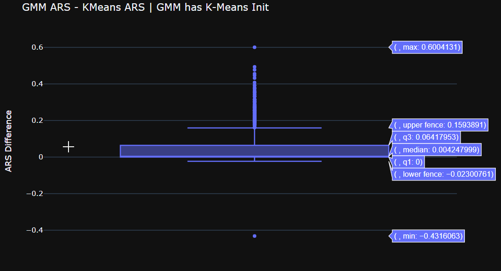

Gaussian Mixture Models
Purva ParmarIntroduction
- GMMs represent normally distributed subpopulations within an overall population
- Also used for clustering problems
- Can be thought of as an extension to K-Means
GMM as an extension to K-Means
K-Means is a hard clustering method: it assigns each data point to a fixed cluster
GMM is a soft clustering method: it assigns each data point a probability of belonging to each of the clusters
GMM - The Mathematical Form
GMM is a mixture of normal distributions
\[ P(\bold{x}) = \sum_{k=1}^{K} \pi_k \mathcal{N}(\bold{x} | \bold{\mu}_k, \bold{\Sigma}_k) \]- $\bold{x}$ is a $d$-dimensional data point / observation
- K is the number of clusters/mixtures
- $\pi_k$ is the proportion of each cluster
- $\mathcal{N}(\bold{x} | \bold{\mu}_k, \bold{\Sigma}_k)$ is the Multivariate Normal
Proportions
$\pi_k$ represent the proportions, essentially how big the cluster $k$ is in the mixture
The proportions must sum to 1
\[ \sum_{k=1}^K \pi_k = 1 \]Multivariate Normal Distribution
\[ \small{ \mathcal{N}(\bold{x} | \bold{\mu}, \bold{\Sigma}) = \frac{1}{\sqrt{\text{det}(2\pi\bold{\Sigma})}} \exp\left(-\frac{1}{2}(\bold{x} - \bold{\mu})^\intercal \bold{\Sigma}^{-1} (\bold{x} - \bold{\mu})\right) } \]- $\bold{\mu} \in \mathbb{R}^{d}$ is the mean
- $\bold{\Sigma} \in \mathbb{R}^{d \times d}$ is the covariance matrix
Responsibilities / The Gamma Matrix
\[ \boxed{ \gamma(z_{nk}) = \frac{\pi_k \mathcal{N}(\bold{x}_n | \bold{\mu}_k \bold{\Sigma}_k)}{\sum_{j=1}^{K} \pi_j \mathcal{N}(\bold{x}_n | \bold{\mu}_j \bold{\Sigma}_j)} } \]$\gamma(z_{nk})$ represents the probability of the $n^{th}$ observation belonging to the $k^{th}$ cluster.
Clustering with GMM
Fit K clusters to N observations, each of which may be $d$-dimensional
We want:
- Mean ($\bold{\mu_k}$), Covariance ($\bold{\Sigma_k}$) and Proportion ($\pi_k$) of each cluster $k$
- $\gamma(z_{nk})$: probability of an observation $n$ belonging to cluster $k$
Expectation Maximization (EM)
The Need for EM
For a complete observation set $\bold{X}$ containing $N$ observations, we have:
The Need for EM
Using a gradient based optimizer would require computing a derivative, and we have a summation inside the log.
There are also other constraints to take care of, like
- Proportions ($\pi_k$) must sum to 1
- Covariance matrices must be positive semi-definite
The EM Method
We first initialize our parameters. We can initialize randomly or use K-Means as a starting point.The E step: Infer missing values from observations
The M step: Optimize parameters using the "filled in" values in the E step
Expectation Step
In theory, the expectation step involves "expected complete data log likelihood", which is just an expectation over the data given the parameters.
In practice, however, we only need to compute the responsibilities: $\gamma(z_{nk})$
\[ \gamma(z_{nk}) = \frac{\pi_k \mathcal{N}(\bold{x}_n | \bold{\mu}_k \bold{\Sigma}_k)}{\sum_{j=1}^{K} \pi_j \mathcal{N}(\bold{x}_n | \bold{\mu}_j \bold{\Sigma}_j)} \]Maximization Step
We use the responsibilities ($\gamma(z_{nk}$) to compute optimal values of parameters
$\pi_k^* = \frac{1}{N} \sum_{n=1}^{N} \gamma(z_{nk})\qquad$$\bold{\mu}_k^* = \frac{\sum_{n=1}^N \gamma(z_{nk}) \bold{x}_n}{\sum_{n=1}^N \gamma(z_{nk})}$The EM Algorithm
We alternate between the E step and the M step for many iterations, until the log likelihood $\ln P(\bold{X})$ converges.
Metrics: Rand Score/Index and Adjusted Rand Score/Index
\[ \blue{\textsf{Rand Index} = \frac{\textsf{Number of agreeing pairs}}{\textsf{Number of pairs}}} \]The raw RI score is then adjusted for chance into the ARI score
\[ \green{\textsf{ARI} = \frac{\textsf{RI - Expected RI}}{\textsf{Max RI - Expected RI}}} \]The Adjusted Rand Score
We use the ARI (or ARS) as it is a better measure.
- ARI is close to 0 for random labeling independently of the number of clusters and observations
- ARI = 1 when the clusterings are identical (up to a permutation)
Experiments
(1) N = 1000, K = 3, D = 1, Fixed Variance
- 1000 runs (data files)
- Each run had 1000 observations, all univariate
- K = 3 clusters
GMM with EM was done in 2 modes:
- Best of 10 Random Initializations
- K-Means Initialization
ARS Histogram
Comparing Methods
In the 1000 files / runs:- GMM with Best of 10 Random Inits performed equal or better than standard K-Means around 83.9% of the time.
- GMM with K-Means Init performed equal or better than standard K-Means around 90.1% of the time.
- Within the GMM itself, K-Means Init performed equal or better than Best of 10 Random Inits around 60.1% of the time.
Comparing Methods
Comparing Methods
(2) N = 1000, K = 2, D = 1, Same Mean, Different Variance
- 1000 runs (data files)
- Each run had 1000 observations, all univariate
- K = 2 clusters, with same mean but different variances
GMM with EM was done in 2 modes:
- Best of 10 Random Initializations
- K-Means Initialization
ARS vs Difference of StdDev of 2 clusters
ARS Histogram
Comparing Methods
In the 1000 files / runs:- GMM with Best of 10 Random Inits performed equal or better than standard K-Means around 92.2% of the time.
- GMM with K-Means Init performed equal or better than standard K-Means around 63.6% of the time.
- Within the GMM itself, K-Means Init performed equal or better than Best of 10 Random Inits around 74.2% of the time.
Comparing Methods
Comparing Methods
(3) N = 1000, K = 5, D = 3 [Multivariate]
- 1000 runs (data files)
- Each run had 1000 observations, each 3-dimensional
- K = 5 clusters
GMM with EM was done with a K-Means initialization
ARS Histogram
Comparing Methods
Comparing Methods
In the 1000 files run, GMM performed better than standard K-Means in 997 files
The only 3 files where K-Means performed better had some clusters with abnormally low points, like 1 or 2 only
Possible Future Work
- Comparing Random Initialization with K-Means Initialization in the Multivariate Case
- Comparing the EM method with the Gibbs Sampler
- Figuring out number of clusters K when it is unknown
Acknowledgements
- More details on Gaussian Mixture Models - Semester Project Site
- Math with $\KaTeX$
- Slides made with reveal.js
- Plots with Matplotlib, Plotly
- jupyter-themes for the Monokai themed matplotlib plots
- PARAM Brahma under the National Supercomputing Mission, Govt of India at IISER Pune